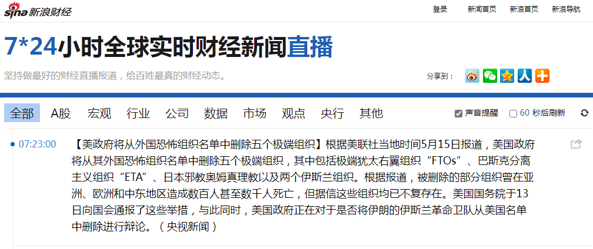

前言
本来在豆瓣开始谈笑风生的时候，文集简称「豆瓣吐糟」，因为预定除了日记之外还会应景写点书评、影评、剧评之类。只不过由于「来来来，请注意学习观摩」之后，为了回避之前一直否认的「文人相轻」黑锅，决定还是尽量不要为幕后黑手炒作「同行是冤家」提供素材。直到《一千零一页》堂堂完结，也没有发表任何一条「文学批评」。
不过呢，在决定使用豆瓣广播功能的时候，就已经按照职业习惯为了现实和架空准备好「历史舞台」了也：
所以，本篇把在那之前的针对具体作品的评论摘出集中备份，今后也会补充类似内容。
至于「本台特约评论员」的化名？有那许多权威机构认证的先例。除了「范囧声」之外，不是「范评」也该是「范喷」，总不能是「范吐」吧？
范评《琥珀之剑》
发表位置：萌新长评《琥珀之剑》.
这书中间断更好几次，前些天集中时间从头到尾看完。首先要肯定主要内容和中心思想都是三观端正充满正能量，这是其它网文当中比较罕见的，代入到党国高音喇叭的视角看，作者有成为“钦定文豪”的潜质。
其次，不用特意强调读者也都明白，作者是ACG圈里混久了的资深人士，对于各种设定和背景的细节非常熟悉，所以可以专注于情节而不需要临时查资料恶补。但是要指出，楼主提到的“景物描写”，确实是“文笔”不错，只不过恐怕并非是作者凭空设定或想象出来的场面，而是对游戏场景的描述。旁白也差不多，估计也是游戏台词，可能参考了一些轻小说和动漫。
注意这不是贬义的评价，白描是“文字工作者”的基本功，从小学“看图说话”开始直到大学中文系都在训练这些东西。我只是重复前些天的观点，卖IP的写手提供的文字描述转化成ACG的时候，美工和视频工作室要干的工作比写手本人多得多。而反过来就简单许多，“文笔”的好坏，体现在对同一个场景的描述之上，但毕竟不是无米之炊。
至于力量体系的多种设定相比之下反而不重要，刨除商业目的之外，只是起到了对情节的推动作用而已。当然，开挂太大导致推得太生硬，到底是优点还是缺点，只能见仁见智，至少从吸引读者这目的来看是优点，看主角装哔很爽。
而剧情本身，能看出一些游戏剧本的影响，以及作者与朋友跑团时的集体智慧。又回到了老话题了，网文写手的功力普遍不如专业作家和编剧，也不如各个游戏工作室的相关团队，借鉴同样是单方面的。
十个月前我Tacitus评论网文界动向的时候提到一个例子，【英雄无敌三历代记】。同样是单主角，但八个副本分别是八个阵营，情节还能连贯起来只有转折没有神转折。这剧本的高度没有任何一个网文写手能达到，包括正经作家当中也是罕见。
总而言之就是说，本书瑕不掩瑜，若是不考虑借鉴的版权问题，应该算是难得的网文大作。
主要问题就在于金手指开太大了。穿越，重生，系统，基地，血统……
除了血统别的都可以接受，普通金手指罢了。而“血统”被设定为“权限”，也就是游戏入场券，算是现实政治游戏规则吧。而“玛莎”企图苟延残喘重启世界六次之后仍然失败的情况下无奈中选择了主角终结“血统”种族主义，也算是政治正确/不正确。
若是最后思想“升华”一把，啥“只有背叛阶级的个人，没有背叛利益的阶级”，党国高音喇叭就乐了/哭了，“钦定文豪”的乌纱帽/顶戴花翎妥妥到手/到不了手
范评《奥术神座》
发表位置：《奥术神座》到底讲科学 还是魔法？
刚看完。先说结论：如果从没有政治立场和倾向的中立读者角度看，《奥术神座》确实是一部出色的网文。但是我的体会就不一样，因为自身经历的原因，能明显感觉到这本书也是一部精心的商业化作品。作者本人是不是流水线当中重要环节还不得而知，但是可以肯定，为作者提供大纲构思创意素材的团队，一定是与现实政治紧密相关的。
解释一下，说过看了大约一半（已经进入VIP了）放下了。这次从头开始看，一直到2013年10月21日那一章之前都是看过的内容，然后继续订阅。后面的内容我这三年多来都完全不知道，也没关注过相关讨论。当时什么原因放下不看，现在没翻自己的日记，印象里可能是因为政治原因，是我自己决定的还是因为每次点开页面就死机（被提醒？）暂时想不起来。
这么说什么意思，我怀疑因为十八届三中全会的缘故，大纲和素材随着政治形势而修改。之前的情节，先从音乐入手，然后元素魔法，到了魔法议会以“元素和星相”为专长，以元素周期表为敲门砖，明显是向着“化学”以及“天文”山头站队。但是往后，数学和物理的内容越来越多逐步占据主要地位，而在引力和量子两个前沿阵营当中也选了量子方向，但却保留了引力阵营的时空系法术。到了2014年四月初完本，还有部分情节没有展开，虽然不算烂尾但也不能说收束有力。之后又补了两部番外。
所以对我来说，本书的政治因素已经很明显了。很多素材和情节都是赞助商团队负责设计的，随着政治形势变化而逐步提供。各位如果对政治足够敏感，可以自行回顾，音乐、化学、天文、数学、物理、计算机、游戏……都是明显的影射。十八届三中全会之后本来是尘埃落定的局面，但是到了转过年来四月初，风向突变。至于原因，我知道为什么，各位不知道就不知道吧。于是本书仓促结尾，能用上的素材都尽量用了，用不上的赞助商会拿给其它工作室，对此作者没有发言权。
加一句，虽然这几年我都不知道后面的内容，但是似乎和我的一些意识形态与其它领域的构思有些接近但仍然分歧巨大或貌合神离。我的观点一部分是龙空发言，一部分是日记。当然从龙空用户当中的读者角度看来，似乎有点不一样，应该是觉得我在为本书观点“辩护”但又没有对本书有任何评价？这种错觉或者说巧合，也许未必是一件坏事，若是我参与评论了之后，可能剧情走向又会随之改变，也算“观察者效应”？
对内容的具体分析，下一帖回复再详细说。
所以武道宗师大放狗粮和一堆表态不喜欢这本书的帖子也是政治啦？可是感觉网文影响没那么大吧
乌贼别的书我都没看，似乎之前之后的网文都是仙侠至少是中国背景的黄皮角色？我是因为当初龙空推书才注意到《奥术神座》的，并非从作者找起。最近再次注意到这本书，也是因为龙空两个帖子，我都回复了。一个是推荐当个法师闹革命的帖子，一个是说奥术神座被翻译成英文的帖子。
让我感兴趣的部分，就是因为有些观点貌合神离，比如意识、确定性、灵魂什么的。但既不是因为我先看了书之后再发挥，也不是因为我先发言之后再被参考。包括最近的两篇设定，明明是我认为自己构思出来想好一段写一段，但是这几天看完了奥术神座后半本之后，发现涉及的领域甚至细节都有重合，但观点不一致。乍一看好像是我故意针锋相对一样。
所以我才奇怪，乌贼不能未卜先知，我也没有心灵感应，为啥会巧合呢。一个解释就是说，这本书当中的观点（作者自称写得太多太深）也是在龙空反复讨论的，虽然没挂着书名。因此我在发言的时候不知不觉被带节奏了，虽然没有被节奏同化，但是也因为兴趣把自己的观点和真正的理解阐述出来，后面的构思都是衍生，算是自我启发。
还有一个解释，就是不是这一本书，而是同一个“网文界”赞助商大佬支持的一堆工作室的资源共享，因此无论什么作品和什么节奏都是同一套内容。比方说梦境，比方说七宗罪，至少年初讨论巫师世界和巫界术士的时候我就提到了，当时还没想起奥术神座（毕竟三年多了）。而我对深渊主宰的评论当中提到了“转生术”（奥术神座的“生命藏匿术”）的时候有个神棍脑洞，就是圣包皮那个，结果这几天看奥术神座的时候才发现用“阑尾”的构思。
巧合多了就不是偶然而是必然，只能证明一整套政治和意识形态的舆论一直在缓慢但坚定不移的推进，比如各种反体制反教会的立场。我虽然也这个态度，但无论政治还是意识形态的立场与这帮工作室都不是一个观点。
头次如此清楚明白的理解你说的所有内容，如果是这种程度的话其实不稀奇，应该只是某个文化布局的一方面吧
梦境/梦魇/幻术的影射还不太肯定，但是七宗罪的影射已经很明显了。先把“官方”定义的七宗罪贴上来：
这些恶行最初是由受过希腊神学及哲学的修士埃瓦格里乌斯·庞帝古斯定义出八种损害个人灵性的恶行，分别是暴食、色欲、贪婪、忧郁、愤怒、怠惰、虚荣及傲慢。庞义伐观察到当时的人们逐渐变得自我中心，尤以傲慢为甚。
六世纪后期，教宗额我略一世将那八种罪行减至七项罪行，将虚荣并归入傲慢；忧郁并归入怠惰，并加入嫉妒。他的排序准则在于对爱的违背程度。其顺次序为：傲慢、嫉妒、愤怒、怠惰、贪婪、暴食及色欲。
1589年的恶魔学学者开始把每种罪行和恶魔联系在一起，代表各种罪行的恶魔会引诱拥有相同罪行的人。根据Binsfeld说法上进行的分类，其配对如下：
阿斯莫德（英语：Asmodeus）：淫欲（激怒或色欲的魔神始祖）
别西卜（英语：Beelzebub）：暴食（苍蝇君主，圣经中以“鬼王”相称）
玛门（英语：Mammon）：贪婪（财宝和贪婪的错误之神）
贝尔芬格（英语：Belphegor）：怠惰（原亚述的魔神，狂欢的狡辩者）
萨麦尔（英语：Samael）：暴怒（愤怒化身，圣经中以“魔王”相称）
利维坦（英语：Leviathan）：嫉妒（吞噬一切的巨大海怪）
路西法（英语：Satan）：傲慢（地狱统治者，堕天使之首）
此说后来成为许多ACG创作作品的创作改编，但在天主教本身并非被视为正统神学来看待。
巫界术士只提到了“暴食”，没有出现七宗罪的概念而只是开头某段列举，没有“懒惰”多了“恐惧”。奥术神座提到了七宗罪及其对应的“远古魔鬼”，没有暴食，没有懒惰，多了个伪善，还有绝望/恐惧。可见不仅写手枪手对于神学的理解不够，它们背后的赞助商团队当中也没有合格的神学顾问。
我承认若是引入“每人内心都有魔鬼”的设定当中，确实有些罪名不太好写，但也并非不可能。如果对照欧洲宗教史社会史甚至梵蒂冈方面档案，就可以弄清楚当时教廷的用意。这也不是孤证，还能参考本朝，需要艰苦奋斗的时候就提倡勤俭节约，“新三年旧三年缝缝补补又三年”什么的，压低消费增加积累搞重工业……都可以借鉴。
喵了个咪的刚才又死机了，简单写几句出门吃饭去了。就事论事仅从内容出发分析奥术神座：如果抽掉金手指的地球知识，这本书没有灵魂，因为情节随时根据政治形势在改。
我说没展开的情节，就是研究“血脉”的部分。按理说染色体都发现了，基因相关内容肯定是作者准备写的，可以预计会扯到编辑基因组“纯化/优化血脉”上面去。但是作者“毫不可惜”的轻松放过了，这不合理。只不过，如果对照巫师世界、巫界术士甚至琥珀之剑，就能看到这些情节或者说赞助商积累的片段，都派上了用场，只是题材不符于是没有“科幻”皮罢了。
从这个角度再回顾作者的后记，啥“写着写着配角就不出彩了”之类，就能看出来，只是因为形势所迫赞助商不允许作者写了而已，原本的大纲当中，“生物学家”亡灵巫师费利佩是一生之敌，老婆“英国”女王也需要血脉改造来提升实力，明明戏份有得是才对。
然后就是最后那一段作者认为是全书精华（“整本书都为了最后这段铺垫”）的对于灵魂的定义，还说“观察者效应”是“骗人”的，可见情节转换之突兀。就是说，又从微观量子阵营跳到宏观“宇宙论”引力阵营（“高维”很明显暗示弦论）了也。
看来前几天评价本书意识形态还是唯物主义没说错，对于高维灵魂，作者没有任何解释或假说，番外里面也没提到。而我的主观唯心主义立场，倒是已经公开解释过了，“灵魂”或者说意识/意志就是概率场（来自三十年前的观点），我自己还引申出这概率场不是有理数维度而是自相似的分形可以无限迭代拥有无穷深层次结构的观点，而进一步引申出意识可以由纯粹的数学结构产生不需要任何物质基础的观点。这些发言都在龙空，各位应该还有印象。
所以我说，没看后半本没准是好事，否则三年前这些话题吵起来，政治形势会有大变化吖。至于为啥停下来不看了，如果是因为每次点开页面都死机的话，只能说还是阴谋诡计的一部分。从之后我的经历和政治与意识形态领域的思想变化（成熟多了），这个结果属于豪门贵种走兽派搬起石头砸自己的脚。
看到范队的解读，我想问问他是怎么看待机器猫里的阶级斗争的
我不信到现在还有“不明真相的围观群众”，已经图穷匕见了，只有“睁大眼睛额头亮晶晶的装蒜兼贵人多忘事”的聚贤庄法西斯灌水机。马伯庸那自称“后清国太祖高皇帝”还叫嚣“讨厌的人都要死”的逗哔精神病自大狂，原型就是美国的“约书亚·亚伯拉罕·诺顿”，事迹各位自己搜索，典型案例就是呼吁美军兵谏解散国会。然后对照现实，剧本安排马伯庸怎么登高一呼干掉本朝人民代表大会，明天就能看见了。
明天！？
明天人大开幕吖。
如果你知道女主是谁的话应该就不会这么理解了。
刚爬起来酒劲还没过，简单写几句。稍微有点近代历史常识的读者都能看出来，“霍尔姆王国”和主角的衣着明显在影射英国，女主原型是维多利亚女王，在大陆有一块领地“汉诺威”，然后继承了“英国”王位。而从女主即位开始的“黄金时代”社会飞速发展的相关描述，明显是在影射维多利亚时期。
难怪了。阿尔托莉雅是同人文界三大公车rbq之首，宅文说的宅臭味有相当一部分就是穿四战五战收saber，即亚瑟王，阿尔托莉雅。这才是女主的身份，是亚瑟王而非维多利亚女王。你可能不看动画也不会去逛同人区所以不知道吧。
我确实很久没接触ACG了，差不多从2009年开始就只看文字资料，下载也基本上是电子书。以前提到过，在我呼吁各位网友要把带宽尽量利用起来下载资料之后，家里的eMule就再也连不上服务器了，每次找到新服务器几分钟后就掉线，然后也不再下载了。我说钦定文豪无下限不要脸卑鄙无耻，无一字无来历吖。
然后就事论事，只看奥术神座里面的描述，“霍尔姆王国”的历史与社会情况，戏份不多的女主的经历，到底更像本位面维多利亚还是同人中的“阿尔托莉雅”，凡是三观已经“半固化”的读者都能作出自己的判断。
另外多说几句，看这书的人有zf的人很正常，因为就我掌握的资料看，新华社人民日报团派里面有相当一部分人是死宅，基层里武警交警公安纪委比例也不少，正所谓“我们的人来自五湖四海，有些人甚至打入了敌人内部”。等到2025年到2030年左右，中国的宣传组织到时候将会有一场剧变，舆论导向权将重归中央控制。
废话，这批“公务员”首先是人，当然有人类的娱乐需求，还不是从只有样板戏的年代成长起来的，当聚贤庄法西斯灌水机要算兼职。
所以嘛，不用我说各位也能猜到，我的设定里面一定会有个供奉在红场的圣徒“圣保尔咔嚓金”，背景放在罗刹彼得大帝时期，事迹就是以身作则当抹布炮灰，忽悠全国三分之一人口献了青春而断子绝孙之后，罗刹终于实现工业化了也。
时期归时期，人物归人物，里面咖喱棒和十分能吃啥的就是在neta阿尔托莉雅，没跑了。还有维多利亚时期哪里还有骑士精神，摆明了是说亚瑟王嘛。
小说里面用十年时间走完了本位面七百年的路，当然看着骑士精神和蒸汽机感到违和了。开头的宗教音乐为主的环境最晚算巴赫时期（十八世纪）吧，圣公会成立是十六世纪，虽然教廷分裂已久但没有“路德宗”“加尔文宗”等流派。
是作者硬把中世纪的政治环境塞进近代早期，而不是相反。到底是那些偶尔出现“咖喱棒”之类致敬梗更有说服力，还是除此之外所有背景描写更有说服力，我相信三观“半固化”的读者都有自己的判断。
洗完澡了精神多了，继续。无论是奇幻皮的科幻，还是科幻皮的奇幻，都没做到自圆其说。尤其是以“严谨”为卖点的“科学”理论，最后一段“精华”用个莫名其妙的理论圆谎，给读者的感觉就是推理小说最后一页出现个新角色是凶手一样。
如果要“科幻”，其实哪怕学术圈都已经有了公开的猜测，就是“本位面模拟器论”，离散的普朗克长度/时间是最小单位。还补充说“晚绑定”，就是人类认识程度决定模拟器运行精度，所以啥水晶天、本轮均轮、四元素都不能算错，只是当时的玩家没赶上后来上帝不停推出新资料片满足新玩家日益增长的好奇心罢了。
从另一个角度看，也就是我这种主观唯心主义者的角度，既然人与“造物主”之间是互动的关系，“造物主”会随着人探索的方向而细化相应模型，那么“点错科技树”就可以理解了。本位面按照唯物主义路线发展，所以一堆化学元素、原子结构、引力论……都出现了。而异位面若是另外一条世界线，魔法等超凡力量未必不会出现，唯物主义的物理化学生物等理论会天翻地覆，但是语文数学不会，从此引申的纯精神层面的音乐等领域不会，参考“七艺”相关内容。
所以我的设定当中，平行世界的物质就是四元素，就是德谟克利特的原子论，就是有正能量负能量，就是生命活力论。至于为啥简单的元素组合表现出千奇百怪的性质，那就是“附魔”的解释了。还有一种解释（设定中的反对派），是纽结理论（初等数学即可理解），认为微观领域一个闭环上不同的纽结体现了不同的性质，这是本位面现实中出现过的“伪科学”不是我信口胡诌。
因此我估计初步完成设定至少需要两年，然后还得修改一遍保证自洽。这些设定只是完成了描述平行世界而已，世界里面发生的事情，或者说剧情，完全是现实政治和意识形态斗争的翻版。我直说绝不当钦定文豪，也不打算在文坛发展，如果各位嘲笑“我”的信仰，那就尊重“作者”的设定吧。
刚才又特么死机了，钦定文豪就这个操行。没关系，咱的设定当中肯定会出现个逗哔精神病自大狂，自称“德意志太祖高皇帝兼匈牙利摄政”，还叫嚣“讨厌的人都要死”。
还有聚贤庄法西斯灌水机狡辩，就说这逗哔精神病自大狂的原型，是“美利坚太祖高皇帝兼墨西哥摄政”的“约书亚·亚伯拉罕·诺顿”，事迹照样照搬本位面历史，并且添油加醋。
然后就简单了，咱不需要用ACG影射政治，而是直接用政治影射政治。看看这帮“公务员”，为了自己的乌纱帽/顶戴花翎，为了前途，到底是对政治更敏感呢，还是对ACG更敏感。
你也是小看了这帮人的作死精神。没人举报和抗议绝对不会管，反而会看的很开心。
这就对了，既然它们不介意被ACG带节奏，那么更不介意被政治带节奏。想表现出“爱国”也很容易嘛，按照“一向不惮以最大的恶意揣测中国人”的态度，既然“国境线内无好人”，那么外国更不会有好人，于是“地球村里无好人”可也。
莫名其妙，自我高潮，不知所谓，建议看看心理医生
聚贤庄法西斯灌水机出现了。奥术神座的“理论”就是个披着科幻皮的政治墙头草，之前主角还信誓旦旦的说，魔力的根源就在微观领域，到了最后又跳回宏观的弦论去了也。
人大没出事啊？是星期一吗？
当年美军也没遵守“美利坚太祖高皇帝兼墨西哥摄政”的圣旨吖，想干的事情要放风，但是自己不能当被逗哔精神病自大狂忽悠的傻哔吖。或者这么说吧，当年旧金山乃至湾区给约书亚·亚伯拉罕·诺顿一世捧场的，都是拿钱上街的托儿，类似现在网上的聚贤庄法西斯灌水机。
可是也没见马伯庸出来放话啊
你也知道我拆穿套路已经是好几个月以前了，并且一直揭露这个逗哔精神病自大狂。虽然在其主场S1被除迹，但是影响已经存在了。所以嘛，放风当然要换一种方式。
可能的方式，就是“又出新书了”，或者前一阵龙空右下角广告“又在策划了”，然后找一帮聚贤庄法西斯灌水机炒作，剧透的内容就是放风的重点。其实你回忆一下，之前也有桌游“大明辅弼”和“大清要完”，这就是政治放风，只是没炒作起来罢了。
那你昨天又强调一遍有什么意义？
因为有人主动提起来吖。就看本楼27层，故意提到逗哔精神病自大狂的“成名作”，当然代表了政治风向。所以我当然要迎头痛击。
这么说吧，在我提到“诺顿一世”之前，有多少网友知道这个人？正好可以对照本楼6060z的发言，体现了小白和老白读者的本质差距。
在小白（或曰“娱乐至死的九零后逗哔”）眼里，奥术神座女主角就是“亚瑟王/阿尔托莉雅”，它们的信息来源就是ACG，没有别的。而老白因为知识结构不同，第一印象就是维多利亚时期的维多利亚女王。
同理可证，小白跟着聚贤庄法西斯灌水机的节奏吹捧马伯庸，那是“我们年轻人在网上闹着玩呢”。而老白看见自称“后清国太祖高皇帝”还叫嚣“讨厌的人都要死”的逗哔精神病自大狂，第一反应就是“诺顿一世”，出于政治目的而扶持起来的放风用活广告。
哇，这种完全活在自己世界里的人真是罕见啊，有意思有意思
喏，我的设定已经完成一篇了：【范版西幻设定集】之二：通背拳法与居合斩
极简主义，能忽略的一律忽略，不到一万字而已。你当它是短篇小说也行，当作长篇的开头也行。一个作者嘛，当然要让角色活在自己作品的世界里面喽。
继续写啊，范队，看的正爽，你说完了
都说过是极简主义设定了，若是按照网文套路，“第一卷！西点军校！”……这就几十万字出去了。
加一句吧，设定里面只有一个最普通最常见的德语人名“汉斯”是凭空出现的，其它都是地名或历史人物。极简主义原则之下，连名字都能省略就省略，“教官”、“侍从”、“军校”即可。
为什么上面提到了“西点军校”，因为本位面当中它是美国联邦政府管辖的，对应“国立”“部属”大学。而用了因斯布鲁克这个地名当人名，暗示主角不是被送进地方军校而是“帝国”直辖军校，当然要高标准严要求了。
再加一句吧，可能有人觉得“詹巴蒂斯塔”也是凭空出现的人名，但我用来指代历史人物维柯（Vico，1668年6月23日－1744年1月23日），观点与教会不完全一致。我准备用他代表前面提到的“纽结原子论”反对派。而本位面那波利（那不勒斯）当地有黑帮“克莫拉”（不是西西里的黑手党），梵蒂冈与黑手党的关系，最晚从墨索里尼时代就开始了。
所以，文中说刺客可能来自“敌军、叛军、黑帮、邪教徒、教会、敌对家族”，无一字无来历，所有助力全都适合钦定主角“博尔扎诺子爵阁下，那波利的詹巴蒂斯塔”，这才能对钦定反角“汉斯”进行多方围堵两面夹攻。
极简主义的缺点就是省略了太多“常识”，可以认为是伏笔，但是对读者要求太高。我敢肯定，若是全套设定结束之后剧情展开，肯定有小白喷：“为啥凭空冒出个黑帮来身上带着圣水被追捕还能躲进教堂还有牧师疗伤”？“烂文下架”！
活在自己世界里的人真可怕
你是在讽刺乌贼么？它笔下主角活在了一个既有地球科技的好处又有魔法便利的奇怪世界里面，为了说服自己，还凭空捏造了一套似是而非的理论。那么为啥乌贼不提前写个“一堆幻想世界之间的胡乱穿越”的网文大作呢？
说的是你啊。。。写网文肯定是把自己脑子里的故事写出来。。这个都能扯上政治，明显的过度解读而已。。
政治无处不在，哪怕只看琥珀之剑，也能体会到，有个从小比人聪明还比人努力的神童大少爷，念念不忘“学姐”……
范评《深渊主宰》
《深渊主宰》
喝多了回来了，简单写几句睡了。从前天晚上23点到今天早上7点，看了一大半。准备等全看完之后再去原创评论版开个主题谈感想。现在先把初步结论写出来。
首先，这网文也是工作室出品，就从“混乱法师”和“狂法师”的措辞不统一也能看出来，都是用一环“莽行术”替代传奇法术，可见是同一个东西。以前提到过某本赌场小说里面“命中率”和“概率”分别出现在前半本和后半本，现在找到网文的对应了。至于啥“番外”（魅魔女王相关内容）不列入正文只在微信公众号上发布，也可以看出来这工作室本来准备用三俗勾引读者但是遭到了和谐之力的阻挠。都写出来了还随手发布，工作室的身份确定无疑。
然后就严肃的评论意识形态的内容。第一感觉“深渊主宰”这个书名，应该体现了混乱邪恶阵营的深渊的党和国家领导人的崛起。但是看简介，主角明明是秩序阵营，正文也多次强调了秩序的重要性。那么就是说，作者的屁股坐在既得利益者这一边，以保守的立场为种姓制度和蠕棍所谓三纲五常辩护。
所以我才很失望吖，本来以为可以看到“混乱”的轰轰烈烈的革命运动呢。在下层位面，革命的深渊和反动的地狱之间的血战，是“打烂一个旧世界再大手一挥建立起一个红彤彤的新世界”的斗争，应该戏份很多才对。至少为了反抗既存秩序，“革命无罪造反有理”、“横扫一切牛鬼蛇神”什么的，都应该体现在下层位面斗争当中才对吖。很可惜作者没有任何意识形态的积累，当成打怪升级爽文就这么糊弄过去了。
最后才是私货，艺术来源于生活，很多现实政治斗争都没体现出来嘛。比方说精灵主神那谁欠了一屁股债，只能把老婆萝丝送给地狱之主阿什么斯的私生子谁来凌辱调教为肉便器再卖到深渊当慰安妇；再比方说狄什么根欠了一屁股债，只能把老婆魅魔美什么亚送给阿什么斯的私生子谁凌辱调教为肉便器再卖到深渊当慰安妇；更比方说财富女神沃金经营不善欠了一屁股债，只能把自己送给阿什么斯的私生子谁凌辱调教为肉便器再主动去深渊当慰安妇……
能写的东西有得是，就看工作室背后金主是谁了，金主不点头，这帮奴才一个字都不敢影射。
酒劲过去了，简单写几句，然后继续喝酒看网文《深渊主宰》。
各位知道“利用写小说搞反党活动是一大发明”这话是谁说的么？是针对哪本小说的么？是瞄准哪个山头的么？结果打倒了谁么？
然后就能明白，在一个与中国完全无关（无论古代近代现代当代）的背景下，可以随便胡说八道，二十大至少十九大之前没有政治风险。
这个笔名原来写什么太监什么，最好的一本也就是个烂尾，突然这本就死长死长的，原来是卖给工作室了啊
刚看完最新一章，还没结尾，等写完了再总结吧。到底是先有构思创意再“卖给”工作室了，还是用工作室提供的构思创意挂名打字，其实不一样。不过就看文中时不时出现人物卡属性列表，那些数字不像是拍脑袋现编的，很可能就是现实中某个游戏当中的角色，通过后台开挂升级，随时给作者提供进度。
另外16年突然写混乱阵营是逗比的小说就多了，应该也是个风向
混乱阵营是不是逗哔要看屁股，“打烂一个旧世界”的时候就是革命进步，“建设一个红彤彤或绿油油的新世界”的时候就是反动落后。总而言之都是政治站队，如果说个人作者还有可能凭兴趣码字，那么工作室几乎一定是为了背后赞助商的利益摇旗呐喊了。
另外16年突然写混乱阵营是逗比的小说就多了，应该也是个风向
还有个旁证，龙空右下角广告从“世界观”变成“征稿”了。本来里面就一本“马伯庸周行文”，剩下四个写手都是“敬请期待”。估计因为最近我说就是要和马伯庸对着干，丫搞“中国传统背景”我就搞“西方传统背景”，所以写手们都打退堂鼓了。然后估计马伯庸见势不妙也要溜掉，摇身一变成“混乱阵营”，为“全面深化改革”换皮摇旗呐喊了也。
可以参考半夜1：45忽然有聚贤庄法西斯灌水机跳出来吹捧逗哔精神病自大狂顺便喷我：http://lkong.cn/thread/1680025/2.p_48082867
酒乃灭心之毒，星月教义有千恶，而唯禁酒之一善
那么你对24层提到的《沙漠圣贤》那书什么看法呢？我是一直没注意过，刚搜了一下龙空相关主题，评价两极分化。这本用的是“浩劫残阳”设定，作者是“香港突厥人”，除了明显的绿教意识形态之外，就是“社会主义革命”，2012年底十八个大之前开始连载，“入了VIP仍然免费”……于是，背后没有赞助商不可思议是吧？
所以我才说，别以为网文算“娱乐圈”，“量大管饱”不是卖点而是吸引读者的手段，“订阅”也不是作者的主要收入来源，赞助商要求作者塞进书里的私货才是重点。所以作为“老白”，我才“吹毛求疵鸡蛋里挑骨头”的专门盯着意识形态内容不放吖。
我是孤陋寡闻，没看过用FR背景之下的“札哈拉（Zkhr）”为舞台的网文，如果有，肯定应该与以欧洲为原型的费伦有互动吧。相比之下，《沙漠圣贤》（我没看过）应该就是闭关锁国，以此来强调中世纪绿教优越性吧。
继续喝酒看网文，准备先把《琥珀之剑》看完，听说完本了。这书混合了很多设定，比较明显的就有英雄无敌和万智牌。看到半截放下很久，大致记得剧情但细节忘得差不多了了，还得从头回顾一遍。
范队问一件事情可以吗？就是像本来是汉人然后被生造出来的那些民族重新变成汉人的可能性大吗？还有就是像藏族这样离汉族血缘关系比较近的完全汉化的可能性大吗？
1，大；2，不大。前者没有自己的“文化底蕴”，与汉族内部的“民系”是一个层次的划分；后者则不然。
举例来说，可以对比“土家族”与“客家人”，它们与目前主流的“普通话民系”（这词是我生造的但意思大家都明白）的距离（随便取多少特征衡量组成向量空间）差不多远，没准“土家族”还更近一些。
再举个例子，白族，其语言白语与汉语同源，但是分离的时间点在先秦，当时还没形成“汉族”，当然也没形成“白族”。现代白族和当地汉族的区别，比闽南人和东北人之间的区别要小得多。白族的“本主崇拜”和闽南的“妈祖崇拜”也是同一个层次的原始宗教或巫术型民间信仰。
总之就是说，要用历时和共时两种方法判断。比方说如果只有现代语言素材，英语会被认为与法语“关系密切”，这是共时方法；而只有通过古代语言素材，才能判断出古英语与古德语“同源”，这是历时方法。
我的看法就是我写书和他战斗，靠你这样神棍式发言是唤醒不了几个人的，只会让黑屋子里的人害怕要破开黑屋子，就要用投枪和匕首去战斗
个人的精力是有限的，还要在写书的同时一边与赞助商扶持的工作室竞争一边与聚贤庄法西斯灌水机斗争，更加唤醒不了几个人。其实这种你看来神棍式的发言，才是豪门贵种走兽派最害怕的，半夜回复75层的时候忽然蓝屏，刚才回复你的时候又是忽然蓝屏，可见它们在心虚吖。
尤其是对于我这种被24×7监视，言行举止吃喝拉撒睡都被歪曲到往豪门贵种走兽派那边站队的钦定抹布，与其写出来被摘桃子灭口，还不如把创意构思都无私的公开出来，特此声明：谁爱用谁用，但是钦定文豪不行，尤其是马伯庸。
应景举个例子，就说《深渊主宰》里面有个情节，红龙血脉术士公爵夫人的“转生术”，把生命力都集中在身体某个部位然后保存起来，等本体挂掉之后就可以通过这一小部分复活。这个类似活命匣的法术/巫术在《奥术神座》里面也出现过，可见是“共识”，不是个别作者的脑洞。
那么就可以开神棍式脑洞了。谁挂了之后三天就复活吖，谁升天了之后还把身体某个部位留在人间吖。对，就是耶少爷及其“圣包皮”。于是就可以构思个情节，说有“邪教徒”相信耶少爷复活的原因是利用“圣包皮”实行转生术，于是企图通过“圣包皮”再把耶少爷从天堂召唤到人间。
但是提醒写手注意，无论正面反面都不要脸谱化，因为随着政治形势变化，还有真·神转折的余地呢。比方说“邪教徒”才是基督正统传人，当初耶少爷遇难的时候冒着生命危险实行法术/巫术，终于把绝大部分“神力”都转移到圣包皮之上了，召唤耶少爷才是拯救世界。
还可以对照绿教历史，买买提一挂就被篡教夺权了，钦定接班人“圣裔”阿里靠边站，倒是走犹派穆阿维叶获得全教全军全中东各族人民代表大会的一致通过担任核心……然后又能扯到远东红教历史上去。
如何？这个创意构思足够神棍了吧，尤其是幻想文学写手，往什么方向发挥都可以，就看各自的屁股和/或良心喽。
附录：其它相关语境
求主角穿DND世界，与众大奥术师们一起建立奥术帝国的小说
你尊重知识，所以你就对知识磕头了？你相信爱情，所以你就对爱情磕头了？你关爱家庭，你就对家庭磕头了？
接你走的神，是觉得你是跟他一路的，他有责任要保护有着跟他类似理念的人，虽然你非要跪舔的话他也接受，但是你要站直了腰也会得到神的认可，所有那些喊着跟神走就是跪舔的都是智障脑补而已
然后去深渊去地狱，你会被各种器具把所有灵魂里有价值的包括感情、思想之类的东西全都榨取干净，然后剩下的空无一物的废渣灵魂躯壳就丢到垃圾堆里，等待着从里边蜕变长出一只跟你毫无关系的幼虫，成为下层界生物链的一份子
我是不知道为什么那么多智障脑补文就喜欢跟下层界打交道就是了
对了，上边说的神是非邪恶阵营的神，你要是信了邪恶阵营的神，那么下场会依照邪神的爱好来决定
可能是因为托瑞尔流行仙侠吧，写手都是道教徒，“上善若水”、“水往低处流”……当然喜欢下层位面喽。
23333真要道教徒，去机械境找玉皇大帝啊，李耳观音住哪忘了，但是也都是有的
人家道教徒要“长生久视”，要“伟力归于自身”，看不上秩序、体制什么的东西。
电你蛋里有神明非明会，主张现在出现的神都不是真的神，只是某种高级生命，真正的神不是这个样子
然后，神明非明会，巴托地狱扛把子在给他们提供援助2333333
你是在暗示，写肉身封神路线的文豪是境外钦定的，而写“建国后动物不许成精”的文豪是境内钦定的么？
范队你说话太隐晦我听不懂黑话……
原来你说的不是黑话？！
我只是在陈述事实罢了……阿斯摩蒂尔斯可能直接就是好几个反神组织团体的幕后头目或者投资者……tsr设定里好像无信者灵魂在没人管的情况下最后的下场就是喂阿总233333
那就是我太敏感了……网文里面有两种截然不同的风格：通常是追求肉身封神，比如代表精灵（《最后的地球战神》）、代表德鲁伊（《天谴之心》）、随便什么阵营都可以只是为了当卧底内应（《巫界术士》）、半精灵、死神、恶魔（《深渊主宰》）……
另外一种“建国后动物不许成精”的路线，西幻里面比较少，星辰大海流“重生之各种科技帝国”最多。我是没看过任何一本，只看龙空帖子里面的描述，通常主角除了金手指之外就是情商超高，一口一个D爷爷J爷爷叫得甜……然后就发家致富当“贱到骨子里去了”的奴才了。
加一句，还有“重生之各种娱乐帝国”、“重生之各种大亨”、“重生之各种霸主”、“重生之各种崛起”……也是主角情商超高，比书托儿喷子们想像的还要高，不是到处认爹，而是到处认爷爷……（下略）
浏览完不等于完全理解。比如扔给我一本相对论我看完了，每个字都认识，但还是不明白什么意思，或者只理解了其中一部分意思。
很早以前就有个脑洞，说“魔网”第几层就代表“三加几维空间”（不包括时间）内的拓扑结论。于是接触零层魔网也不过是普通的物质的元素魔法罢了，越往上“冥想”难度越高。卡尔萨斯的十二环封神术，已经超过弦论的设定了，于是脑壳宕机挂掉。
然后立刻就放弃了。因为对于拓扑来说，低维（特指三维）最难，高维反而简单，因为有额外的维度可供辗转腾挪。而数学上一堆结论都经常是可以随意推广到任意有限维甚至无穷维。那么这个设定就不合理了也，放弃。
范注：
这个话题本身确实集中在相关「设定」之上，而流行的西幻题材爽文使用的「二设」或者说借鉴了原版并增加有利于主角作弊并洗地条款的规则，被资深玩家所批判。若是数字四则运算细节也就罢了，但是钦定文豪码字巨侠对于官方设定当中背景及各阵营的政治和意识形态立场的歪曲，资深玩家也看不下去。
我是看到明显出现「理论联系实际」或者说「如果钦定文豪码字巨侠所接触的现实与官方设定不符，那就按照金主赞助商指示的宣传套路篡改原版中心思想及主要内容」相关争论，资深玩家就差直说就是替黑帮洗地了，才进来参与讨论。发现确实官方原版设定在迭代多年之后已经可以体现出类比现实的多元化倾向并且细节丰富，就没有再参与。
至于为何「敏感」的将官方设定相关讨论误认为「黑话」，可以参考耍钱的新浪或曰后浪奔走相告的权威机构活动迹象：
 当时其它话题的情况类似，这些现实新闻相关的讨论当中，就连运用「黑话」的背景都差不多，毕竟「西式奇幻设定」影射「西方政治和意识形态」更理所当然。
后记
当时由于注意力集中在「西方背景奇幻设定」之上，主要评论的就是类似题材的网文，还有一些评论零散分布暂时找不到。现在看来以文件形式单独备份相关吐槽所涉及的这三部划时代大作，刚好代表了三种特征，评论过程中与其它评论员互动的时候可以明显观察到反应各不相同。
《琥珀之剑》就是字面意义上的「日式缝合怪爽文」，这字眼就是屎绿配色的国际化大都市「华语第一精日论坛」之上提出来的，通常用来指代商业流水线畅销作品尤其是「异世界」系列。其特征是将政治和意识形态斗争弱智化低龄化脸谱化，通常特意声明纯属虚构与现实人物团体事件毫无关系。这些明火执仗为了赚钱而制作的产品当中，政治和意识形态含量几乎处处为零。所以其口碑尚可，即便出现「不友善」的评论，也局限于「技术细节」包括但不限于借鉴了那许多有版权的商业设定，通常还会被拥趸嘲笑为「文人相轻」。
《奥术神座》则不然，蕴涵了一定的政治和意识形态内容，并且从结果看似乎与我的立场针锋相对。在评论中我最先猜测由于是这几年一直在龙空参与讨论的缘故，可能与该作者之团队或合作者提出的各种话题有交集，于是「互相」影响。但是从后来跳出来的炒作同样涉及政治和意识形态斗争还美其名曰「搞笑而已何必当真」的马伯庸成名作的帐号之表现观察，这伙人应该是同一条战壕的战友还彼此联系密切。那么这部划时代大作当中与我的构思有冲突之处令我看着扎眼就不能算是巧合了，恐怕是不惜歪曲中心思想和主要内容有损结构也要故意写给我看的。
类似的情况可以参考《知乎问答№036：你最喜欢的一句数学界的名言是什么？》的情况，在我已经开始谈笑风生阐明世界观方法论并连载《设定集草稿长编》之后，邀请我回答这个问题，题面还特意摆出「走毕达哥拉斯路线的当权派」重量级人物的歪理邪说，看着扎眼是肯定的，不惮以最大的恶意揣测乃故意为之也是顺理成章的。于是我的回复当然可以预测。
克罗内克一类骗子，以不知从何处窃取的「力量」为倚仗，在弘扬歪理邪说压制「知识」的同时，还对康托人身攻击长达十年之久，并且一口一个「上帝」板起伟大光荣正确脸做高举紧跟状。学术纠纷的结果早有定论，而私人之仇，最晚最晚在《恶补记》当中以运用无穷概念的实分析结论「不可测集及其补集无休止纠缠在一起无法厘清」解读钦定正统基督教义「耶少爷身上神人二性不混合不改变不分割不分离」的时候已经替康托报了。
《深渊主宰》则更简单，很多读者都看出来署名作者之前的作品乏善可陈于是不惮以最大的恶意揣测乃工作室出品，既然如此肯定会按照赞助商金主指示的方针政策路线计划而完成。而与此同时大批类似的工作室如雨后春笋般遍地开花，读者视角观察的「2016年涌现的混乱、邪恶阵营主角」之充沛程度也引人关注。结合附录当中纯粹技术角度的解读，就连「两耳不闻糟心事，一心只读规则书」的资深玩家都感觉不对劲，在官方设定话语体系当中批评「二设」并称「智障脑补文」发挥了「诲魔诲鬼」作用，就差直说「部分网文工作室拿黑帮钱财替魔鬼洗地」了。
那就没啥好说的了，所以直接引用弥赛亚或曰大救星当年教导新浪锤镰帮开国元勋红色基因的最高指示精神「利用写小说搞反党活动是一大发明」，后来形容「这一届人民」行不行的时候使用「百善の新时代」固定短语就是从这里获得的灵感。